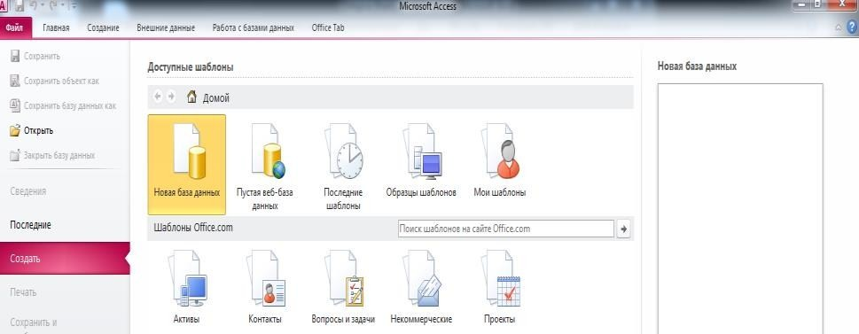
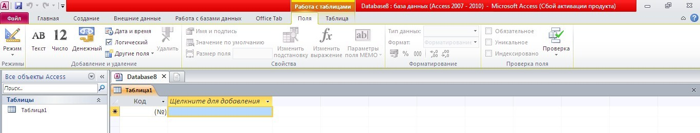
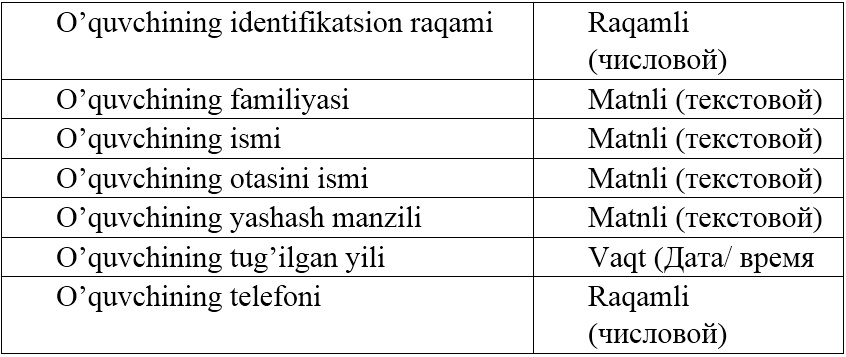
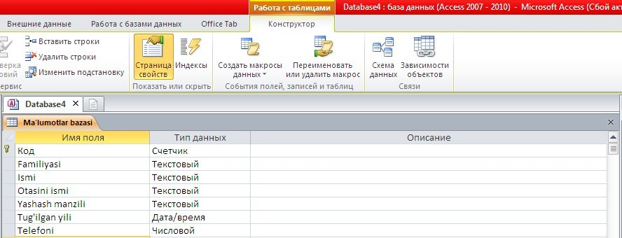
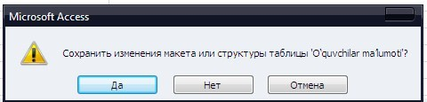
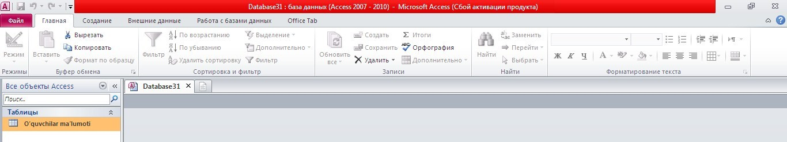
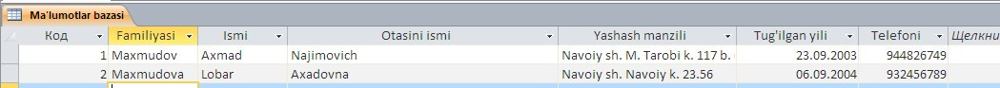
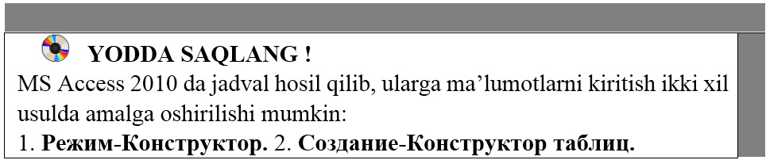

25-DARS. MS ACCESS 2010 DA MA’LUMOTLAR OMBORINI TASHKIL ETISH
MS Access 2010 da ma’lumotlar omborini tashkil etish uchun Microsoft Office dasturlari orasidan Microsoft Access 2010 ni yuklaymiz:

Hosil bo’lgan oynadan Новая база данных bo’limini tanlaymiz. Natijada quydagi oyna hosil bo’ladi:

MS Access 2010 da jadval hosil qilib, ularga ma’lumotlarni kiritish ikki xil usulda amalga oshirish mumkin:
1. Режим-Конструктор.
2. Создание-Конструктор таблиц.
MS Access 2010 oynasida bitta jadval hosil qilish uchun РежимКонструктор bo’limidan foydalanish mumkin. Agar oynada bir nechta jadvallar hosil qilish va ular bilan o’zaro bog’lanish hosil qilish uchun Создание menyusining Конструктор таблиц bo’limi orqali bajariladi.
1-mashq. MS Access 2010 da o’quvchilar to’g’risidagi ma’lumotlarni shakllantirish usuli.
Bajarish:
• MS Access 2010 ning Режим-Конструктор ketma-ketligi bajariladi. Natijada quyidagi oyna hosil bo’ladi:
• Имя таблицы qatoriga “O’quvchilar ma’lumoti” nomi bilan saqlaymiz va jadvalni quyidagi tartibda shakllantirib olamiz:


• ushbu oynadan chiqamiz (oyna chetidagi x belgisi tanlanadi). Natijada quyidagi oyna hosil bo’ladi:

• oynadan Да tugmasi tanlanadi (“O’quvchilar ma’lumoti” nomli jadval hosil bo’ladi).
• o’quvchi haqidagi ma’lumotlar omborini shakllantirish uchun, “O’quvchilar ma’lumoti” nomli yozuv ustiga sichqoncha tugmasi ikki marta bosiladi:

• hosil bo’lgan ma’lumotlar omborini o’quvchilar haqidagi ma’lumotlar bilan to’ldiriladi:

• yaratilgan ma’lumotlar omborini kompyuter xotirasiga saqlaymiz (Файл – Сохранить базу данных как) .
MS Access 2010 da yaratilgan jadvalning ustun yozuvini o’zgartirish imkoniyati mavjud. Buning uchun Главная – Режим – Конструктор buyrug’i bajariladi.


1. MS Access 2010 ning menyu bandlarini sanab bering?
2. MS Access 2010 ning Конструктор таблиц bo’limi qaysi menyuda joylashgan?
3. MS Access 2010 ning Режим–Конструктор bo’limini tanlab, o’quvchilarning familiyasi, ismi, yashash manzili to’g’risidagi MO yarating.

1. MS Access 2010 ni uch xil usulda ishga tushiring.
2. Создание–Конструктор таблиц bo’limini tanlab, o’quvchilar familiyasi, ismi, yashash manzili, telefon raqami to’g’risidagi MO yarating.